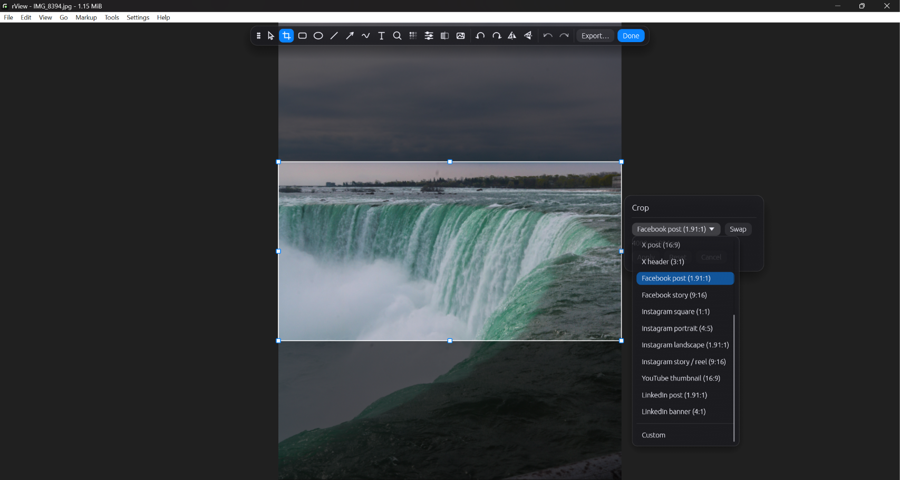

Crop
The right size for every feed.
Presets for Instagram, Facebook, X, YouTube and LinkedIn, the usual ratios or your own. Rotate and flip too.
- C
- Crop tool
- CtrlShiftA
- Open Markup

Crop
Presets for Instagram, Facebook, X, YouTube and LinkedIn, the usual ratios or your own. Rotate and flip too.